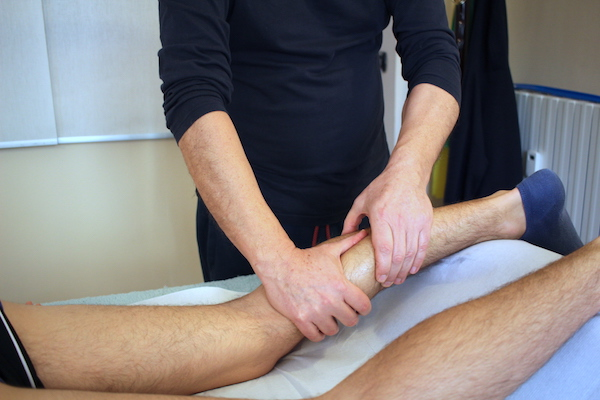

Linfodrenaggio Metodo Vodder
Effetti terapeutici
Il linfodrenaggio manuale studiato ed applicato dal medico danese Emil Vodder è internazionalmente riconosciuto come il metodo più efficace contro edemi, stasi linfatiche, cefalee, occhiaie e in genere tutti i gonfiori provocati da carenze nel sistema di drenaggio linfatico.
Patalogie trattate
In terapia il linfodrenaggio manuale metodo Vodder può dare lusinghieri risultati nella cura di ematomi, ferite, cicatrici postoperatorie, artriti, reumatismi, cervicalgie, lombalgie, stitichezza, emicranie, cefalee, varici, ecc. In estetica è utilizzato come trattamento per eliminare in tutto o in parte problemi come acne, smagliature, rughe, cellulite, edemi superficiali e borse sotto gli occhi.
Cos'è e come funziona
Il linfodrenaggio manuale è una tecnica naturale sperimentata dal medico danese Emil Vodder, utilizzata sia in estetica che in terapia. Il massaggiatore seguendo questa tecnica esegue dei tocchi molto leggeri che hanno lo scopo di incanalare la linfa nella direzione di deflusso. Grazie a questa tecnica è possibile:
- Eliminare le stasi di liquidi interstiziali, cause di gonfiori (effetto antiedematoso)
- Favorire il processo di cicatrizzazione in quanto la linfa fresca è ricca di cellule ricostruttrici.
- Favorire l’ aumento delle difese immunitarie attraverso il potere fagocitario della linfa.
- Nutrire meglio i tessuti restituendo l’equilibrio idrico alle zone disidratate. (effetto rigenerante).
- Essendo molto lento e ritmato, produce un effetto rilassante sia sui singoli muscoli, sia sull’organismo in generale (effetto miorilassante).
- Stimolare il passaggio della linfa nei vasi linfatici aumentando la capacità contrattile di ogni vaso.
Controindicazioni
Nessuna in particolare, ma il paziente prima di sottoporsi al trattamento dovrà comunicare al medico le patologie cui è soggetto ed eventualmente presentare la relativa documentazione medica.
Trattamento
Ogni seduta, costituita da massaggi leggeri sulle parti affette da edema o altre patologie, può durare dai 50 ai 60 minuti.